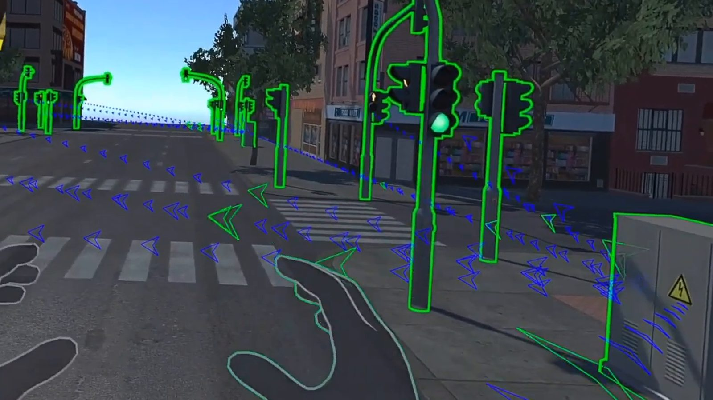
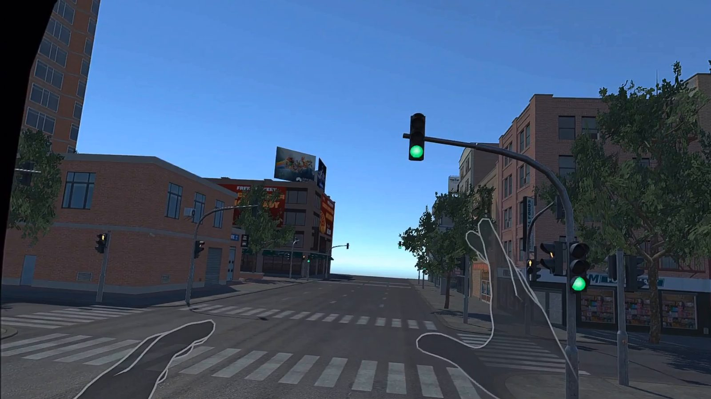

An XR GUI for Visualizing Messages in ECS Architectures
IEEE International Symposium on Mixed and Augmented Reality Adjunct (ISMAR-Adjunct), 2024. Demo.

Abstract
Entity--Component--System (ECS) architectures are fundamental to many systems for developing extended reality (XR) applications. These applications often contain complex scenes and require intricately connected application logic to connect components together, making debugging and analysis difficult. Graph-based tools have been created to show actions in ECS-based scene hierarchies, but few address interactions that go beyond traditional hierarchical communication. To address this, we present an XR GUI for Mercury (a toolkit to handle cross-component ECS communication) that allows developers to view and edit relationships and interactions between scene entities in Mercury.
Video

Cite
B. Yang, X. He, J. Li, C. Elvezio, and S. Feiner, “An XR GUI for Visualizing Messages in ECS Architectures,” in Proc. IEEE International Symposium on Mixed and Augmented Reality Adjunct (ISMAR-Adjunct), 2024, pp. 640–641, doi: 10.1109/ISMAR-Adjunct64951.2024.00189.
@inproceedings{yang2024xrgui,
title={An XR GUI for Visualizing Messages in ECS Architectures},
author={Yang, Ben and He, Xichen and Li, Jace and Elvezio, Carmine and Feiner, Steven},
booktitle={2024 IEEE International Symposium on Mixed and Augmented Reality Adjunct (ISMAR-Adjunct)},
pages={640--641},
year={2024},
doi={10.1109/ISMAR-Adjunct64951.2024.00189}
}